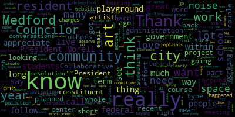
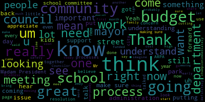

AI-generated transcript of City Council 01-10-23
English | español | português | 中国人 | kreyol ayisyen | tiếng việt | ខ្មែរ | русский | عربي | 한국인
Back to all transcripts
[Hurtubise]: Welcome to the first regular meeting of the Medford City Council 2023. Madam Clerk, please call the roll. On zoom I believe he was on there earlier. Please rise for the Pledge of Allegiance. I pledge allegiance to the flag of the United States of America, and to the republic for which it stands, one nation under God, indivisible, with liberty and justice for all. All right, this is the one time of the year that I get to preside over the council meetings. My rule is that I want to be in the chair for as short a time as possible. So agenda item number 1, 23001, election of a council president for calendar year 2023. May I have nominations for council president, please?
[Bears]: Mr. Clerk. Councilor Bears. I would like to nominate Nicole Morell for council president.
[Hurtubise]: Councilor Bears has nominated Nicole Morell for Council President with a second from Councilor Caraviello.
[Unidentified]: Are there any further nominations?
[Hurtubise]: Is there a motion to close nominations? Councilor Caraviello has moved to close nominations. Councilor Tseng second. All in favor of closing nominations? Excuse me? Oh, I do have to roll. Yes, you're right. I have to roll call it just because Councilor Knight is, and I had I been clerk, I would have caught that, but I'm presiding and I missed it. Madam Clerk, please call the roll because Councilor Knight is present on zoom. It has to be, it has to be a roll call vote. Yes. Yes.
[SPEAKER_10]: Yes.
[Hurtubise]: OK, so on the motion of Councilor Bears, as seconded by Councilor Caraviello, for Nicole Morell to be council president for calendar year 2023. Madam Clerk, please call the roll. Councilor Bears.
[Unidentified]: Nicole Morell. Councilor Caraviello. Nicole Morell. Councilor Bears.
[SPEAKER_10]: Nicole Morell.
[Morell]: I abstain.
[Tseng]: Nicole Morell.
[Hurtubise]: I vote of six in favor and Councilor Morell abstaining from voting. Councilor Morell is elected council president for calendar year 2023. Congratulations. You can take it at your seat if you'd like.
[Morell]: Do you do the vice president, too, or do I do the vice president?
[Hurtubise]: I do the vice president as well. So whatever you want to do. I, Nicole Burrell, do solemnly affirm that I will faithfully Council, according to best viability, and understanding, agreeable to the rules and regulations of the Constitution, the laws of this Commonwealth, and the importance of this statement. President, congratulations.
[Morell]: Thank you, everyone, for your continued support. Basically, what the oath said, I worked in the best of my ability to be fair and impartial, and I hope that comes through, and I plan to continue doing that for another year, so thank you.
[Hurtubise]: 23002, election of a council vice president for 2023. May I have nominations, if any, for vice president for 2023? Councilor Caraviello has nominated Councilor Bears. Is there a second? Councilor Tseng has seconded the nomination. Are there any further nominations for vice president? I'm sorry Councilor I missed you.
[Castagnetti]: Motion to close nominations.
[Hurtubise]: Move to close nominations and Councilor Caraviello second. All right. So, on the nomination for Isaac B Zach bears to serve as vice president of the city council for calendar year 2023. Madam Clerk, please call the roll. Isaac Beers.
[Castagnetti]: Isaac Beezik Beers.
[Hurtubise]: All right, on a vote of six in favor, zero opposed, and Councilor Bears abstaining. Isaac B. Zach Bears is elected Vice President of the Medford City Council for calendar year 2023. Congratulations. It's right here. I, Isaac Beers, do solemnly affirm that I will faithfully and partially discharge and perform all the duties incumbent upon me as Vice President of the Medford City Council, according to the best of my ability, and understanding the rules and regulations of the Constitution.
[Bears]: agreeable to the rules and regulations of the constitution the laws of this commonwealth the laws of this commonwealth and the ordinances of the city of manhattan and the ordinances of the city of manhattan congratulations i also i want to thank my colleagues thank president morel um it's been a difficult year but i think in many respects uh we've done incredible work um and we have a lot more to do in this upcoming year to finish out our term. I mean, there's so much on our agenda that I'm excited to get to work on in partnership with all of you. So thank you very much.
[Hurtubise]: Madam Clerk, thank you very much. Madam President, please take the chair. I want to vacate. I'm much more comfortable in the clerk's seat.
[Morell]: Zoom is updating. 22-003 offered by Vice President Bears. Be it resolved that the standing committee rules be adopted as the standing rules of the City Council insofar as they are applicable. Vice President Bears.
[Bears]: Thank you, Madam President. This is an agenda item traditionally offered by the Vice President for the previous year. just adopting all of our rules for the rest of this term for the year 2023, so I move approval.
[Morell]: Second. And I can't see, does anyone have one comment on this? I can't, I'm on Zoom yet. All right, so on the motion of Vice President Bears, it's seconded by Councilor Collins. Mr. Clerk, please call the roll.
[Hurtubise]: Vice President Bears? Yes. Councilor Caraviello? Yes. Councilor Collins? Yes. Councilor Dyke?
[SPEAKER_10]: Yes.
[Hurtubise]: Councilor Scarpelli?
[Morell]: Yes.
[SPEAKER_10]: Yes.
[Morell]: Yes, seven in front of zero negative motion passes. 23-004 offered by Councilor Vice President Bears be resolved with the City Council transfer all papers and committees or on the table from 2022 Council to the 2023 Council Vice President Bears.
[Bears]: Thank you, Madam President, similar motion, just moving all of the papers that are in committee and on the table to the current year. And I move approval.
[Morell]: On the motion of our affairs is second by Councilor Caraviello. Mr. Clerk, please call the roll.
[Hurtubise]: Yes. Yes. Yes. Yes.
[SPEAKER_10]: Yes.
[Hurtubise]: Yes. Yes.
[Morell]: Yes. 740 and then I have the motion passes announcements, accolades, remembrances, reports and records. 23-005 offered by Councilor Collins. Be it resolved that the Medford City Council congratulate Arts Collaborative Medford on the planned opening of their new Community Arts Center on Mystic Ave later this year. Councilor Collins.
[Collins]: Thank you very much, President Morell. Myself and others in the Medford Arts community received word just a week or two ago that there is a planned opening for Arts Collaborative Medford's very long-planned, long-anticipated community arts center sometime later this year. At this point, it's looking like it's going to be in the spring. This has been the product of years and years and years of work and effort on the part of many in Medford's arts community. As a working artist myself, you know it's hard to overstate how important it is to have a community art center actually within our city limits, it's, it's very hard to find. space for arts, for community arts within our communities. These spaces are really scarce, they're really precious, they really mean a lot to artists working in all types of media. So I'm really excited to see what this can do to leverage a very rich existing arts community in Medford and I just want to wish a very hearty congratulations to everybody who's worked on this project so far.
[Caraviello]: Thank you.
[Morell]: Thank you, Councilor Caraviello.
[Caraviello]: Thank you, Madam President. Thank you, Councilor Collins for bringing this forward. I want to thank you for this because I started working on this two years ago. I was the one that received the call from that company and the gentleman that I spoke to says he had some space that he would want to donate to the community. My first thought was the home for the arts and immediately after that, I reached out to my fellow Councilor Councilor Marks at the time, who was a member of the Arts Council, and him and I, along with Jim silver or rumor, and other people we had several meetings with the people from Gordon group and it ended up be. We had to wait until it finally got approved by thing but it's something that you know I'm happy to be part of. And I want to thank you know Council marks for all his help because he goes back to the days when they were trying to get the swan school. And that's that never happened and I know we tried to get the property on. over by the park there, that never came through. So I said, this is something that I'm glad that I had a hand in, and I say, I wanna thank all the people in the arts community for all their, we had many meetings down there, and I know it took some time before we finally approved it, but I think that was one of the, that was a good thing when they came to me and we got it done. So thank you for bringing this forward.
[Morell]: Thank you, Councilor Tseng.
[Tseng]: Thank you, President Farrell. I think Councilor Caraviello kind of read my mind. The talking about arts and how we find a space for arts was one of the things that Councilmarks and I actually talked about a long time ago before I even ran for office, and I wanted to make sure that you got a proper shout out for the work that he's done and the tremendous amount of effort that Councilmarks put into making sure the arts as a space and effort as well. The arts, I think it's not controversial to say, is a benefit to all Medford residents, from youth to adulthood to retirement. The arts really, I think, brings out creativity and brings out community. And I'm someone who benefited from investment in the arts back at Medford High, back in the Medford public schools, I miss, I miss the art classes and the music classes. And I think, you know, as someone who just graduated from school, finding a way to kind of continue to be connected to an arts community is something that I think is at the heart of the front of mind. for a lot of Medford residents. When we talk about mental health, which is obviously so important, this is one of the ways that we can work together as a community to address the issue. So I'm very excited for this, and I thank Councilor Collins for putting this on the agenda.
[Morell]: Thank you. Any further discussion from the council? On the motion of Councilor Collins, seconded by Councilor Caraviello. Mr. Clerk, please call the roll.
[Hurtubise]: Vice President Bears. Yes. Council carry over. Councilor Collins. Yes. Council night.
[SPEAKER_10]: Yes.
[Hurtubise]: Councilor scarpelli.
[Morell]: Yes.
[Hurtubise]: Councilor Tseng yes. President Morell.
[Morell]: Yes. So the inferno is here and then I get the motion passes records the records of the meeting of December 20 2022 were passed to Councilor count Caraviello, Councilor Caraviello, how did you find on the motion of Councilor Caraviello seconded by Councilor scarpelli Mr. Clerk, please call the roll.
[Hurtubise]: Vice President Bears. Yes. Yes. Yes. Yes.
[SPEAKER_10]: Yes.
[Hurtubise]: Yes. Yes. Yes. Yes.
[Morell]: fuel storage tanks, litigation, and there will be a remanded hearing on this next week, the 17th at our regular meeting. Do I have a motion?
[Hurtubise]: Motion approved.
[Morell]: On the motion.
[Hurtubise]: Is there a motion to approve just the open session, correct? Yes.
[Morell]: On the motion of Vice Mayor Bears to approve the open session report, seconded by Councilor Tseng. Mr. Clerk, please call the roll.
[Hurtubise]: Vice President Bears. Yes. Council Caribbean. Yes. Council Collins. Yes. Council night.
[SPEAKER_10]: Yes.
[Hurtubise]: Councilor Scarpelli.
[Morell]: Yes.
[Hurtubise]: Councilor Tseng prison room.
[Morell]: Yes, seven in front of zero negative motion passes motions orders and resolutions to to dash 602 offered by cancer vice president bears just keep reading what's on the paper, be it so resolved in the Metro City Council that the mayor and traffic commission implement a citywide program to put up signage on all public ways indicating city policy for snow removal and street sweeping, specifically the odd even snow emergency policy and information on the big sweep. Such a program would improve quality of life for residents by reducing tickets and towing and improve the compliance and public safety during snow emergencies. Vice President Bears.
[Bears]: Thank you, Madam President. I know that ideas like this have been discussed many times in the city. As everyone is aware, we have our big sweep twice a year, and there's not really posted signage anywhere in the city indicating when that's going to occur. So for many residents, that means either you're in the know or you're not. And when you're not in the know, that can mean a ticket or a tow, and an inconvenience to say the least, and a significant financial burden on residents of the community. You know, I have personally spoken to many residents who've been caught up in this, and you know, the answer, well, you sign up for email notifications, and you're not gonna, you know, that's not really the answer that I wanna be able to provide, and I don't think it's the answer that the city should be providing. Similarly, during snowstorms, you know, there's always someone who doesn't know about odd even, or what year is which, and we have some streets in the city where you can't get by. You know, Bob can't get by if there's a car in the wrong place, so it's a ticket or a tow, and that's only if they catch him before the snow falls. So for public safety reasons, for quality of life, for making sure that residents are, you know, not, you don't have to be in the know to avoid a penalty like this. I really think that we should move in the direction of trying to put up signage on all the streets where this applies to the best of our ability so that residents are informed when they, you know, it's a lot easier to say to a resident who gets sick at her toad, the signs right there, you know, you really got to read that sign. It makes the information much more accessible. In terms of the content itself, You know, I foresee that it's possible. You know, I know the big sweep happens on different days and you have odd even in alternating years, but I really think it's possible that we could at least put up a sign that says, these are the months when the big sweep that generally happens. You know, these are the months when we generally have snow. Visit the city website for specific details on those days and times. And then, you know, it's not the perfect solution. I mean, the perfect solution would be a better process and more funding to do something more than the big sweep every year. I know in neighboring communities, they have, you know, every Tuesday, we do street sweeping, and then it's real easy, because you only have to, you know, you don't have to take that extra step when you look at the sign, all the information you need is right there. But I just think we need to do more on this front, especially for better or worse, now that there's a in-house, you know, parking program at some point that should produce, I would believe, some revenue to potentially support a program like this, and again, So many residents so many people you know who have been affected by this have made it a point to reach out and say, can we do something better it's something I hear really often so I would really appreciate my colleagues support and hopefully the support of the mayor and the Traffic Commission as well. Thank you.
[Morell]: That's great.
[Caraviello]: Thank you. So I understand what comes up is coming up this is, this has come up many times before. And you're right, we only sleep two times a year and we don't even know. when the sweep is coming. The cost of putting up these signs for sweeping twice a year when they give you the number is quite costly. I'd rather see them spend the money and buy a sweeper. The $200,000 or $300,000 it's going to cost to put up these signs, to sweep twice a year, I'd rather spend that money on a sweeper that'll sweep on a regular basis or about one or two sweepers. And the other thing is we're suffering from sign pollution in this city. There's signs everywhere. There's signs for everything. I mean, you go down the streets, from where I live in West Medford, there's like 64 signs in a half a mile stretch. So let's say, I think we got to stop picking and choosing the signs that we put up. I mean, we're putting up a sign for everything now. Some streets have got many signs. So again, I understand where you're coming in and the intent is correct, but until we have a program in place where we're sweeping every week, we put up a sign to say we're gonna sweep twice a year. I think it's just a waste of money. I'd rather spend that money and buy a sweeper.
[Morell]: Thank you, Councilor Scarpellilli.
[Scarpelli]: Thank you, Councilor Caraviello. Thank you, Council. I too understand the concept behind it, because we all get the phone calls from the people that didn't know, and I think a lot has to do with the transparency and the communication from the administration's office. I think that's where we're lacking. I think that I work in a community that the streets get swept every Tuesday, so having those signs up are important. even that, being a member of the community there, you still hear people complain because they got towed or because, you know, one thing or the other. So if we had an infrastructure in place here that had the times and locations all set, and we know, I mean, imagine even getting the notification today, you know, what process they have today for the twice a year, it starts one day, then all of a sudden it's another day. So and then changing those on a sign that would be monumental. So I think that I also agree. I got a phone call from one constituent that reminded me over an issue in their neighborhood when they putting up, um, they're putting up crossing, you know, crossing sides. They were upset because What is Councilor Cabrera assigned pollution? Yeah, it just looks messy when we're trying to clean the streets up. So I personally think, I don't disagree with you. I just think there has to be a process from the administration that really spreads the word. I know that, what is it? I've heard that there's a new website unveiling soon probably 2025, I'm not sure, but as soon as they get an IT department, they're putting together. a new site. I mean, that's the first step. I mean, um, you know, something simple as in the old days, they even coming down the street and putting, you know, notices on telephone poles, letting people know that they're coming the next day, having the police come down a little bit earlier, hitting the sirens. I mean, there's got to be another way. And what I would recommend is honestly calling for a subcommittee that we can actually you know whether it be signs with with myself or traffic that we can meet with all the parties involved and let's let's vet out a process that even right now what we could do immediately before the spring sweep and we so we can look at that process i think i don't disagree with council beers i i hear we get the same phone calls But I think there's so many other variables that would impact that. I think we're just way too early to look at the cost, the aesthetics of it, and the management of it. We don't know when we're going to do one thing or the other. So that that's why I would, I wouldn't support it tonight, but I would support a meeting and bringing this forward to a subcommittee where we could bring all those parties that council is asking for together and say, Hey, this is the extreme in my eyes, but what can we do right now to make it work? So thank you.
[Morell]: Thank you. Councilor Collins.
[Collins]: Thank you, president Rowland. Yeah, I really appreciate the discussion around this. you know, we all get the emails and the calls when we, you know, usually it's around the big sweep. And, you know, I think it's an issue that I'd be really happy if there was a way for the city administration to look at what can we do short term and what can we do long term. I got a call a couple months ago from a constituent who, real recent resident, I think they live in South Medford, just like I do. And they said, you know, I just didn't know my car got towed and it was like her whole paycheck. know, of course, a lot of people have had that experience. It's not a one-off. You know, I hope that she was able to, you know, bounce back from that. But, you know, that's the type of thing that I think we have a lot of conversations about and ultimately want to insulate our residents from that kind of penalty. I think people want to do the right thing. I, you know, of course, we're, we sit behind this rail. We're Councilors. We're not policy implementers. Like, I don't know how to do the DPW's job. Certainly don't know how to do our city staff's job, but I'd really love for this to, whether it's through this resolution, follow-up meeting, you know, either or, I think that this is something that I'd really love to discuss with city administration, just to say, you know, what can we do so that we're bridging that gap? Because I think we see the patterns where there are residents, as Councilor Bears says, there are residents who have been on the email list all along, they get the phone calls, and then there are folks who just, they don't know what they don't know. And I think that ideally would be part of a revamped communication strategy, but I'd love it if we could do as much as we could. Thanks.
[Tseng]: I think a lot of the points on either side of the debate have already been said so I'll keep my statement short. I would love. I think this is a, this is an important issue. I do think that, you know, we have a responsibility as a city to make sure our residents are well informed about what goes on in our community and how to avoid being ticketed, and I would really I think on issues like this, I think it's important to bring in the stakeholders to the table and see what, as Councilor Collins said, we're not experts on this issue, but I do think that this is a valid idea, and it'd be good to hear about what the city administration has to say about it.
[Morell]: Thank you.
[Caraviello]: Thank you, ma'am. This was talked about before. And it was talked about when the person rents a house here, that the real estate people or the landlord should have a packet to give them so they know to sign up for these things. For the students that are here from Tufts, Tufts should give them a packet. So they sign up for the 911 calls or the email. And we talked about this many years ago. It just never came to pass. But I said, I think that would be a better option. Even if the city did a mailer to every house with a packet saying, listen, if you want to be notified about these things, sign up, register your phone, your cell phone, or sign up for the notifications. I mean, I get calls from some people that in the middle of a snow storm, they're calling up saying, you know, no one told me it was snowing out. There was a story, I said, well, you know, I want to say to people, are you living under a rock sometimes? I mean, some people just don't want to, you know, don't want to accept responsibility for not parking, you know, when they should be parking. But I think, you know, maybe the city should send out a packet to all the other property owners and tell them give this to your tenants when they move in so they know what the procedure when a person rents from the real estate people should have these the chamber of commerce should have these so i say there is other revenues to get this out there uh then you know the you know to move forward for those who don't you know say you just you know moved in here recently president bears thank you madam president um and thank you councilor carbiello i think um
[Bears]: you know, that's a good point about something maybe we could add to the housing stability notification ordinance that we were close on. You know, we could add that in as something that they should include, you know, not just here's your rights around housing stability, but here's some key city resources around parking, snow removal, et cetera. I think that would be a really easy addition to make to that. And I'd just like to propose an amendment to this resolution. I think maybe it sounds like we're all on basically the same page that we just want this to be better than it is now. And I'm not married to, you know, we must have my $300,000 street sign program. So I would propose an amendment first to strike the word implement in the first sentence and replace it with the word explore. And then I have a further amendment that I can read out when the clerk's ready. Great. It would be be it further resolved that the mayor and traffic commission report back on barriers to adding signage as well as current actions. Yep. To improve communications. regarding street sweeping and snow emergencies for discussion with the council. And then we'll get whatever they send back to us. We get a cyber to send it once we get the communication.
[Morell]: Any further discussion by the council? Councilor Tseng.
[Tseng]: I think I'm cancer caravilas suggestion is good one and I would, it would be great to see that in the housing stability notification ordinance. I think another aspect that I would like to add to it is adding it onto the city website making sure that it's an easy place to find. I've been a big proponent of having a welcome to Medford part of the website, a resource where all the most important documents are all in one place, especially for younger residents who are moving in. Oftentimes, internet is the first place that we go to to find information. And so when it's easy to find on the internet, I think that would be a benefit to our community.
[Bears]: If I may just quickly, that is embarrassing. Thank you. Yeah. And then I think to that point, You know, I was reading, I think, a welcoming committee agenda, something that came through our packet recently. And it seemed like they may be sending something to people.
[Hurtubise]: They're meeting tomorrow. That's their first meeting.
[Bears]: OK.
[Hurtubise]: OK.
[Bears]: Yeah. So I had seen that on the agenda. Yeah, it seemed like they were going to be sending something out. So maybe that's something we could try to have a rolling discussion as well.
[Hurtubise]: of 2,000 people.
[Morell]: Any further discussion?
[Bears]: I thought I had something else to say, but now I've completely lost.
[Morell]: Sorry. Councilor is saying that's an amendment? Or just, I don't know. Any further discussion from the council?
[Scarpelli]: neighborhood communities that street sweep every day, their traffic and parking department, their fees and fines go directly to the streets, parks and school department. So that's what that money is used for. And then you see the action, the reaction of their constituents are pretty pleased when they realize, okay, I messed up, I got a parking ticket, but if it's going to go back to the schools and the parks, it's worth it. Not to new growth, but so thank you.
[Morell]: Any further discussion from the council? I want to thank Bison and Bears for putting this forward. I like this resolution so much. I introduced it about eight months ago, something very similar. So the point I knew, I knew what Councilor Caraviello was going to say, I knew what Councilor Scarpelli was going to say. So I'll put in a plug once again for I know how Somerville does like yard signs that just say it's the odd year, it's the even year, whatever. So even if it's temporary signs that say this information is on the website, I know our approach to it is possibly too convoluted to put on a sign, but maybe it's something that could be put, you know, directing people where they can see it.
[Unidentified]: Yep.
[Hurtubise]: Yeah.
[Morell]: So on the motion of vice president bears as amended by vice president bears second by Mr. Clerk, please call the roll. Yes.
[Hurtubise]: Yes. Councilor Scarpelli?
[Morell]: Yes. Councilor Tseng? President Bears?? Yes. 7-4-0-0-9, motion passes. 2-3-0-0-6, offered by Councilor Caraviello. Be it so resolved, the Medford City Council have the DPW director report to the council on the reason for paving Freedom Way, first, during the school year, and second, for why we are paving and whether that is not preferred for paving. What type of warranty will their contractor be responsible for when it starts coming up in the future? Is this the finished result? Councilor Caraviello?
[Caraviello]: Thank you, Madam President. I did get a response from the city engineer, but, you know, I had the opportunity to drive by there last week. And I mean, it was a patch job. It's really all this. I mean, I don't know. You know, we had the big fanfare, you know, making this, putting this out there so we can pave it. And I was led to believe that we were going to pave the whole street. And when I drove by there, I mean, we couldn't have come out a few more feet to Riverside Ave for all the bumpy parts, the patches, not patches. I just wasn't happy with what I saw. And I talked to some of the workers there, and the workers were saying that, you know, this isn't the time to be doing paving work in the cold weather. And, you know, I want to know when this starts coming up, who's going to pay for it again. I think the engineers said this is not a finished result. Well, when are we going to have a finished result? I mean, I think that was the original plan to make it, when they made it a public street, was to pave the whole thing, not just do patchwork. That's like we do on all our other streets.
[Morell]: Can I have that email? I can read it. So this is from City Engineer Wartella. So as you know, Freedom Way recently became a public way to bring the road up to city standards. Freedom Way would need to be completely reconstructed. The current conditions of the road would likely pose a safety risk if not repaired before this winter. The city was ready to move forward with this work in late summer, but was delayed since the roadway needed to be accepted by both the city and the state prior to using any Chapter 90 funds for the repairs. The state delayed this process into mid-October, which left the window to go to bid very narrow. The coordination efforts between multiple city departments were key in achieving this process in such a narrow timeframe. The start of the milling and paving operations was delayed many weeks to find a weather window where temperatures were accommodating. The engineering division was on site during the entire operations monitoring the milling and patching process. Our staff was there to ensure the paving was placed at optimum temperatures and rolled out in accordance with paving specifications. The work was done during the daytime to meet the necessary temperature requirements. The pavement patching is only temporary. In the next two to three years, we intend to redesign and reconstruct the entire roadway. The city has also coordinated numerous communications prior to the start of this work, informing the public of the start and duration of the project. Although there was a bit of disruption during the first day of operation, the work always started after morning drop off and ramp down during the afternoon dismissal to accommodate the school schedule. The engineering office is working with the city DPW crews to reestablish a yellow center line along the entire roadway, but this work is weather dependent.
[Caraviello]: I did get that. I'm just going to say, I'm just disappointed, Madam President, that again, it's another job that's incomplete, and they're saying two to three more years before we finish it. So I'm just disappointed. All the fanfare of getting it to be made a public way, and that's what we do. We just patched it. Thank you.
[Scarpelli]: If we could, for the record, could we ask the engineer for just a cost breakdown of what that was? Because it'd be interesting to see what that cost.
[Morell]: Do you want that in the form of a motion? amendment. President Bears your hand up. Any further discussion? So on the motion of cancer Caraviello, as amended amended by Councilor Scarpelli, seconded by Councilor Scarpelli. Mr. Clerk, please call the roll. One moment. I do see Mr. Castagnetti has his hand up. Mr. Castagnetti, name and address for the record, please.
[Castagnetti]: Good evening. Andrew Castagnetti, East Method, Massachusetts. Am I getting through?
[Morell]: You are.
[Castagnetti]: Thank you. I've come to praise Caesar and not to bury him, as they say. I must praise and commend whoever got Freedom Way repaved. Many, many kudos. Thank you very much. In the name of safety and humanity. And it's a good night. And I do hope it last a chance Donnie. Thank you and good night.
[Morell]: Mr. Clerk, please call it.
[Hurtubise]: Vice President Bears. Council carry all this. Council calls. Yes. Councilor Knight.
[SPEAKER_10]: Yes.
[Morell]: Yes, 7-0-0 negative motion passes. 3-0-0-7 offered by Councilor Collins. It would involve the Medford City Council to request an update from our federal delegation on the status of the FAA review of block two of the one-way TARNAP study, which includes recommendations for dispersing noise from airplanes departing and arriving from Boston Logan Airport. As of September, 2022, the FAA was supposed to have begun a review of these recommendations so as to consider navigation changes that would lessen noise pollution for Medford residents. Councilor Collins.
[Collins]: Thank you, President Morell. So this is bringing up a topic that has been brought up innumerable times by, I don't know how many Councilors in the past, probably all of them. I'm really not sure. And, you know, as we're all aware, we still are receiving, we're hearing from residents who are experiencing a level of noise pollution from airport traffic that is disruptive to their daily lives. The background on why these air transit navigation changes happened and when they happened and why that's now causing additional trouble for certain neighborhoods in Medford. It's all on the city website because it's something that branches of our government have been active in. This is just a following up on some of those recent efforts to follow up on promises that have been made by our federal delegation and the federal agencies that they're trying to work with. Unfortunately, we are many, many steps removed from the people with the power to affect the navigation changes from Boston Logan. That could get some relief for our residents. but we have to stay on this. One short term step that we can take is just to follow up with that federal delegation and say, where are we at with the FAA reviewing these recommendations that include potential solutions for dispersing this noise pollution and go from there. And if constituents who aren't already very active in lodging noise complaints would like to do so, there's a lot of information on how to do so on the city website. If you go to airplane noise, there's a couple, there's a few options for where to register specific complaints that these all get compiled and eventually make them what make their way to the decision makers. Thank you. Thank you.
[Morell]: Councilor say.
[Tseng]: Thank you, President Morell, and thank you, Councilor Collins, for introducing this resolution. I think, as you said, almost every, if not every councillor that sat in this chamber in recent years has done something to complain to, in effect, done something to try to resolve this issue. Although, as you also acknowledged, the people with power are far removed from us. I think, you know, this goes without saying to everyone who lives in Medford, but I think it's a particularly important point to make is, you know, why is Medford suffering the brunt of this? Why don't we see this in other communities? It's not for a lack of complaining, and it's not for want of trying. And I think when we talk to the federal delegation, we need to make that clear that this is an equity issue as well. This is an issue of respect to our community. And we need to work hard and work as a united front to tackle this issue and to make sure that there is that accountability for the people that are making these decisions who have the power. We did receive that email from the city administration that they're meeting with Congresswoman Clark's office on January 26th, and that senators, the two senators from Massachusetts, Senator Warren, Senator Markey are co-sponsoring a piece of legislation in Congress. My personal take is that it would have been good for the city administration to inform us before so that we could pass a resolution or express our support for the conversations that they're having with the Congresswoman's office. I'm personally a believer that when all branches of our city government work together, that's more influential and more impactful than if one branch of the city government was to walk into a meeting alone. and it would have been good to solicit our feedback and to solicit a statement from either from our city council as a whole or from councillors individually for this meeting, as we did with the MBTA bus network redesign, which did win back several bus lines service to Medford. That's my take on this issue. And I think going forward, I think this council wants to be partners with the city administration when it comes to working to get better results for Metro residents. And I wish that in the future, when it comes to cases like this, we can unite forces.
[Morell]: Thank you, Councilor Tseng. Any furthers? Vice President Bears.
[Bears]: Thank you, Madam President. Thank you to everyone who spoke. I just want to echo what everybody else said. I think this is an issue, and it's like many issues in the city, where if everyone's on the same page and we can work together as a team, we have a better chance of getting things done. I think that's generally true about most things in life. But I have been hearing a lot more from residents lately around the noise. And, you know, it is, if you look at the the heat map of flights, it is every flight, if the wind patterns are right, every minute or two minutes, right over a great vast majority of the city. So at the very least, while we may not be able to stop it unilaterally, or even as has been said, we are so far away from the decision making on this where it's at the federal level. I think we all share an understanding of how impactful this is on so many residents in their daily lives. just wanted to share that. Thank you.
[Morell]: Any further discussion from the council on the motion of Councilor Collins is seconded by Councilor Scarpelli Mr. Clerk, please call the roll.
[Hurtubise]: Councilor Caraviello. Yes. Councilor Collins. Yes. Councilor Knight.
[SPEAKER_10]: Yes.
[Hurtubise]: Councilor Scarpelli.
[Morell]: Yes.
[Hurtubise]: Councilor Tseng yes. President
[Morell]: Yes, seven in favor, zero in the negative, the motion passes. Going to public participation. I have a Vice President Bears.
[Bears]: Madam President, could we take papers under suspension 23-008, 23-009, 23-010, and 22-612? All right, and these are all under suspension? Three under suspension, one from the table. Okay. And then 612, 2612.
[Morell]: So on the motion to take under suspension to take papers in the hands of the clerk, as well as one from the table, and these are 23-009, 23-008, 23-010, and 22-612, that covers them all? Seconded by Councilor Scarpelli. Mr. Clerk, please call the roll.
[Hurtubise]: Vice President Bears. Yes. Councilor Caraviello. Yes. Councilor Collins? Yes. Councilor Knight?
[SPEAKER_10]: Yes.
[Hurtubise]: Councilor Scarpelli? Yes. Councilor Tseng? Yes. President Morell?
[Morell]: Yes. I'm the informant here in the negative. The rules are suspended to take these papers. I'm just gonna take them in the order in our packet and then go to the table. Great. 23-009 offered by Councilor Scarpelli. Be it so resolved the Medford City Council call for a meeting with the mayor, superintendent and school committee to discuss the safety plan implemented at Medford High School. Councilor Scarpelli.
[Scarpelli]: Thank you, Madam President. Again, maybe the wording is a little off, but the intent for this resolution isn't really to discuss what has been unveiled to date. I think it's really too early to see the benefits. I think we hear a lot of great things from the students I've talked to that immediately they felt safer, immediately they appreciated the structure. They still, the administration had assemblies with all the kids so they can explain what the process is and what's happening. So that was very helpful. So we saw a lot of very good movement, but I think that this resolution is really for this council as we move toward the budget season, where the biggest department in this community that takes up most of this budget. Our city budget is a school department and also understanding the shortfalls that are being mentioned in public arenas from our city administration, how bad the budget is going to look this coming year. I think it's important that we meet with the mayor, the superintendent and the school committee as they start to put their budget together and the understanding where the questions that came about during these concerns and these issues, safety issues, that we're making sure that we're in full support funding-wise when it comes to security processes. the implementation or any maintenance that needs to be done on cameras, the understanding of any processes going through. If the SRO is that they hired, I hear great feedback from the kids that they feel safer because of that and understanding that process and making sure that's funded in the police budget or the school budget or the city budget. So a lot of this for this resolution really was meant for setting up that meeting because I believe um someone on the school committee mentioned that this council has never asked for that and and they've never seen us there. So I think that I'm reaching the olive branch to say let's find find a time to all meet and so that we're all on the same page when it comes to this budget for this serious concern and serious issues that we witnessed this past couple of months that we need to make sure that we are on top of that. So if we can, I just hope my fellow councilors, I would make the motion, like I said, that we really, that council president reach out to the mayor's administration and call the superintendency, what we can do to get a meeting You know, relatively soon, I mean, we did get some, we will be getting some paperwork, I believe, financial paperwork. Is it all of it? I think it was just one, one month, I believe. So we still don't know or understand the pattern of our fiscal climate right now. That's still unknown to us, but at least we can sit down and understand the process that I know that when I was on the school committee, the process was very clear and it was very open. We understood what we were looking for as a school committee. And like I talked to a few councils earlier, it was very simple that we looked right away as what we were making sure we're maintaining any legal obligations to any programs that were running in the schools. and making sure that we had coverage with that, with those programs. And then we listened to every principal to make sure that all the needs were met in each school. And I'm sure they do that now, but I think it'll be important for us to understand that process and for us to express support for the budget that they're looking for, the school department's looking for as a partner to make sure that we're all on the same page. This was a very difficult situation that divided our bodies, not everybody, but some people in each body. I can only imagine what's going to happen when the budget comes out and they tell the school department that they have to cut another $2.3 million per se. That's a fictitious number. That's not a real number. I'm saying, fictitiously, if that happened, where would we be? So I don't want, I wanna make sure that we're on the same page and proactive. It's first of January right now, before we really unveil this and we still get into the nitty gritty of the budget, we really need to hold a meeting with those stakeholders to make sure that we're all on the same page. So thank you, Madam President.
[Morell]: Thank you. President Bears.
[Bears]: Thank you, Madam President. And just, I appreciate what you just said, Councilor Scarpelli. to try to capture that in the scope of the resolution, would something, amend the motion to read, be resolved by the Medford City Council that we request a joint meeting with the school committee to discuss the items requested by the council at our December 20th council meeting and funding for Medford public schools, including the FY 24 budget, that council president and chair of the school committee shall coordinate the scheduling of this meeting.
[Scarpelli]: Yeah, that'd be that. But the intent and that encompasses everything we need to talk about will bring up the safety concerns as part of their budget. As long as you know, if you could put if we could put something in there, not only with December, was it December 20th? Yeah, we talked about it. Yeah. Okay, so I take that back. I forgot that date. So no, that would be that would work. That'd be great.
[Bears]: That would be that would work. Yeah. And I you want me to read that I could get you the language email. Okay. Yeah. Too long. too fast.
[Scarpelli]: We can get mine. I gave you mine in three seconds.
[Collins]: Councilor Collins. Thank you, President Morell, and I just want to thank Councilor Scarpelli for putting this forward and for your words in describing the intent behind this resolution. I think that, you know, what I feel that the community is looking for is for this whole Medford City government to work together to improve the lives of specifically students and those who work in the schools. And, you know, isn't that the goal of government in general? And I see this as a really, just a great way to start off the year saying, you know, we're partners in this, we're equal partners, let's strike the right tone, let's have a collaborative meeting. We all want the same things. What do you need? And what can we do to support you. And I know from some informal conversations with members of the school committee. This process of saying, here's what we need to create the school environment that our students really deserve and then hearing back a number that's different process that's baked into the school committee here, you know, better than I do. And if we can help shore up, making sure that we get as close as possible to having NPS have what they need to provide the environment that students deserve. This is a great tone to start out the year with, and I really appreciate it.
[Morell]: Thank you, Councilor Collins. Councilor Caraviello.
[Caraviello]: Thank you, Madam President. Thank you, Mayor, the Councilors for bringing this up. I feel that this is something that should have happened many years ago, not just now that we have an issue I've always had the belief, and I brought this up when I first got elected, that city council schools should have met once a year anyways, just discuss common needs and goals. So we get on the same page, not just meet when we're in a time of crisis. So again, I thank Councilor Caput for bringing this forward. And I hope this is something that after we meet, there's something that will be continued on in the future. So we're not into this situation of fighting with each other. It should be collaboration amongst all the government bodies. Thank you.
[Morell]: Thank you.
[Tseng]: I think I just wanted to echo what Councilor Collins said. From my conversations with people in the city, I think people most want us all to work together to develop a solution. And when we work together, that's when we find a more sustainable solution. And that includes more voices, more stakeholders, and keeps in mind the fact that we're all elected or we're all hired to do a job and that we are really on the same team. You know, I think, I hope that this is the start of a fruitful collaboration with the school committee going forward. And I think, you know, I hope this is the start of a respectful and collaborative relationship between all of our bodies.
[Morell]: Thank you. Any further discussion from the council? On the motion of Councilor Scarpelli, as amended by Vice President Ferris, seconded by Councilor Caraviello, Mr. Clerk, please call the roll.
[Hurtubise]: Vice President Ferris? Yes. Councilor Caraviello? Yes. Councilor Collins? Yes. Councilor Knight?
[SPEAKER_10]: Yes.
[Hurtubise]: Councilor Scarpelli? Yes. Councilor Tseng? Yes.
[Morell]: President Morell? Yes. 7-8-4-0-0-9, the motion passes. 2-3-0-0-8, offered by Councilor Scarpelli. Be it so resolved that the Medford City Council send the family of Gerald Bradonese our deepest condolences on his passing. Gerald was a former Medford firefighter and longtime Medford resident. Councilor Scarpelli.
[Scarpelli]: Thank you, Madam President. And again, Mr. Bradnese passed, I believe, before Christmas, and we haven't had an opportunity to bring this resolution forward, so that's why it's a little late, and I apologize to the Bradnese family. Mr. Bradnese was one of those families that led one of those families in Medford that were stalwarts of our community. a U. S. Navy veteran. Um, a longtime method resident, a method firefighter for over 30 years, and, um, he passed away peacefully before Christmas. And, um, I just wanted to reach out. His son, Mark and I graduated together at Medford High School. Um, he had a wonderful family, wonderful wife, and, uh, he'll be missed in our community and especially the tap street area. Um, You know, you should get special dispensation for living on that hill anyway. Uh, so I know that, um, uh, he's definitely a loss and I would, uh, ask the, um, the clerk to send out, um, um, uh, memo to the family, just letting them know that if we could honor them by, uh, holding this meeting in his name. So, um, and hold the moment of silence from Mr. Brand. He's appreciate it. Thank you.
[Morell]: Any other members of the council wish to speak? Please rise for a moment of silence. So on the motion of Councilor Scarpelli is seconded by Councilor Caraviello. Mr. Clerk, please call the roll.
[Hurtubise]: Yes. Yes. Yes. Yes.
[SPEAKER_10]: Yes.
[Hurtubise]: Yes. Yes. Yes. Yes. Yes. Yes. Yes. Yes. Yes. Yes. Yes. Yes.
[Scarpelli]: I caught a little heat after inviting the football team and congratulating them for their community service. We had a few other champions that I'd like to call on for our next meeting, Mr. Clerk, Madam President, so we can give them a citation and congratulate them on a job well done. That was our 2022 Girls Varsity Soccer GBL champions and our champion Anna Casey from our cross country team. So if we can just put out an invite, contact Athletic Director Maloney, and have young ladies come out and acknowledge their accomplishments. Thank you.
[Morell]: Thank you, Councilor Scarpelli. Any further discussion? As a former track and field athlete who, our team went undefeated the same year as the football team, and we get overlooked. I appreciate the, I appreciate the mea culpa. So on the motion of Councilor Scarpelli as seconded by Councilor Caraviello, Mr. Clerk, please call the roll.
[Hurtubise]: Vice-President Ferris. Yes. Councilor Caraviello. Yes. Councilor Collins. Yes. Councilor Knight.
[SPEAKER_10]: Yes.
[Hurtubise]: Councilor Scarpelli.
[Morell]: Yes.
[Hurtubise]: Councilor Tseng. Yes.
[Morell]: Yes, the motion passes. 22-612, proposed ARPA project in excess of $250,000. I'm gonna pull this up on our previous agenda. We do have Peter Cushing here, as well as Shane Pelliquin to speak on this. Let me find the original paper. Okay, so December 14, 2022, to Honorable President and members of the Medford City Council, regarding the proposed ARPA project in excess of $250,000. Dear President Morell and members of the city council, I respect the request and recommend that your honorable body allow time for a presentation by Dr. Peter Cushing and committee member Shanine Pelliquin of the following ARPA project, School McGlynn Playground Project, $750,000. Thank you for your kind attention to this matter. Sincerely, Brown and Lungo-Koehn, Mayor. Unless any councilors have questions or anything they'd like to speak on first, I can hand it over to Dr. Cushing and Ms. Pelliquin. Do you need to share the screen? That'd be great.
[Cushing]: Good evening, Madam President and members of the City Council. Really want to thank you for this opportunity to present an absolutely amazing project for the students of the McGlynn Middle School and all children for the City of Medford. I'm here with our co-chair, my co-chair of the McGlynn Playground Redesign Committee. a committee comprised of educators, parents, and really, overall, a great committee that has come together over the last year. This project started just about three months before the pandemic hit, when we were awarded a CPC design grant to really take a look at the McGlynn playground. We were looking at the port and place surfacing at three of the playgrounds in the city, at the Missittuck, the McGlynn, and the Brooks elementary schools. The Roberts had been done in the previous year. Um, with the help of the community member and really appreciate that community members help miss Rodriguez helped keep that initial effort. Um, I really do also want to say that when we were looking at the McGlynn, um, it is the largest of the playgrounds at all of our schools and about 26,000 square feet. And the port in place that was put in, put in place at its inception about 20 years ago, Um, was definitely overdone. And so we really tried to look at, um, we really tried to look at this from a holistic approach and we embarked on a design study, uh, and are grateful to the community preservation of Medford for initially funding that. And for madam mayor for utilizing ARPA funds, um, to close the gap so that we could do a comprehensive design study of a universally accessible, inclusive playground that will really benefit all students. And when we talk about all students, we're talking about our typical and our non-typical students who may be having a disability or some other ambulatory or other issue. And so we're trying to really make sure that this playground is the absolute best. And so we'll start our presentation, but I wanted to give you a little bit of background. One second.
[Chenine Peloquin]: Does anyone have questions about why this particular, like this big overhaul was needed that would make clear through other sources? Okay, so poured in place rubber, a protective surface, so I'm a playground safety inspector. I've worked with all of you in various things, but most recently I've become a certified playground safety inspector. So protective surfacing is supposed to be within a six, like it's a six foot boundary around any piece of elevated equipment. for fall protection. It's supposed to prevent against critical head injury and death. It's not supposed to prevent against broken arms. It's not what it was designed for, but it is like $30 a square foot. And so when the playground inspector, we had a playground inspector come last February, an independent third party person to confirm what we were pretty sure about, that this wasn't salvageable and what would it cost to try to salvage this? And she said, there's too much rust. the surface is just too damaged, and there's very low play value. So despite how big it is, there's really not a lot for the kids to do, and particularly since the school has 160 kids out there at a time. And this is the program, the special education subseparate program for kids who have more severe to moderate disabilities, including ambulatory disabilities. Like the autism program is at the Roberts, and that would be a different kind of inclusive playground with lots of sensory stuff, right? but this needed to be physically inclusive. But the way that ramped playgrounds are designed, you get a lot of ramp and a lot of very little play value. So you've got a couple of slides. Most of the things are, the kids reported that they outgrow most of the equipment by the time they're in fourth and fifth grade. So they spend the last two years playing football or soccer, but not because that's what they want to do, it's because that's the only thing that space offers. When the inspector came out, you can see in this picture, the dark green above the top edge, that's all flooding. So for much of the year, this playground was unusable, like a third of the surface was unusable because of the flooding that comes in. Many thanks to Tim McGibbon and the DPW who put in a French drain, a temporary drainage solution, so this year they have been able to use the playground. But because of the freeze-thaw cycles and the lack of drainage underneath the resurfacing, it's really was incredibly cracked and peeling. And those surfaces are really only designed to last about 10 to 15 years anyway, so it was already past its usable life. The inspector, when she came out, said that this place was clearly designed by someone who sells surfacing, because the amount of really expensive rubber surfacing throughout, you can see there's the two structures, the entire center part, there's no reason for that to be protective surfacing. And you can't plow it, so it's really not as usable a playground as it would seem.
[Cushing]: And so when we were looking at this, we wanted to make sure that we had a safe playground, The playground inspector also said on the call, you know, this is a playground that looks fun from afar, but when you get up to it, as Shanine said, there's really no play value. As the students get taller and they go down the slides and the slides twist, it actually prevents them from going fast. Kids want to go fast down slides. They've told us this. They want to go as fast as possible. And that just adds to the fun. Also, for our teachers, they have been very clear. that these concrete structures right here, they are a barrier to supervision. So one of the things that we're going to do is this will be a complete demolition of this entire playground. Unfortunately, there really is nothing salvageable. One of the things that we will make sure to salvage, because the students are very clear and articulate, this tree in the center right here will definitely be salvaged, as well as as many trees that are still alive. There are some that are not currently alive at the site. But we will salvage all the living trees, and especially that one in the center of the playground. The other, we also conducted head drop testing. So the port-in-place surface, while at the end of its life, still does provide safety value. But once again, the entire playground is at the end of its useful life.
[Chenine Peloquin]: So it didn't need remediation for this school year to be safe, but it's not something that we can repair. But because of the cost of the ramps, the cost of replacing the ramps, plus the cost of replacing the port-in-place, the port-in-place itself would have been $350,000. just to replace it, not considering any of the structures. But the kids said that that tree, if we did anything to that tree, they would cry for the rest of their lives. So that tree is a focal point of the new playground.
[Cushing]: So our project goals coming out of our committee were that the playground is safe, it's fun, it's accessible, and it reflects the identity of the students. Its primary goal was to meet the needs of the Miglin School if there was phased construction needed. At this point, because of our funding requests and very support from city organizations, city departments. We don't foresee a phase construction, but you never know in these economic times. Offers a range of challenges for all users. So one of the challenges with a universally accessible playground is that it'll offer challenges for some students and that it could be boring for all the students. So we've really tried to take into consideration a wide range of play value there for our students. It considers the wider benefit to the broader community. There are a lot of housing options in the area, and this is termed a destination playground for the region, simply because of its access to the Wegmans Plaza, major arteries, and it's an easy stop-on, stop-off for people just looking to have their kids play. If you drive by in the summertime, you'll notice that it is crowded pretty much all the time. and it can be maintained within the city and the school's resources. This is a major element. Making sure that our playgrounds are well maintained is a challenge, and it does require budgetary resources to make sure that these structures, which you might think are static, they're not. They have parts that move, they have parts that break, and they have parts that rust and deteriorate over time, and those need to be replaced. A plastic slide that you may think That might last for 50 years. If you visit the Brooks, you'll notice that a slide is worn through because the kids use it so much. So just as one example. Significant community outreach was done, and I'll let Shanine speak to this, because she really led the community outreach effort. Thanks.
[Chenine Peloquin]: So on-site events included, I personally did about 12 to 15 hours of playground observations and teacher interviews and student interviews. in the spring, so we could get a head start on making sure that those voices, that the children's voices were heard first, and that the teachers' needs for supervision were considered in addition. Well, the supervision of a school playground needs to be much different than if I'm to take my two kids, I can pretty much keep an eye on them. They might be running in different directions, but there are not 20 of them. So teachers need to be able to see across the playground, so the design needs to reflect that. We made sure we heard the teacher concerns from the, and all of the staff, from the very beginning. We met with the nursing staff, we met with the therapists, with the adjustment Councilors, with multiple grades of teachers off and on the playground. And then we had We were at curriculum night tabling. We had an event after school. And then we actually went to the design committee or the The landscape architects went to the afterschool program and did a whole design workshop with multiple grades in the afterschool program. We were at the Harvester Energy Festival. We did a full survey that was sent to all elementary families and particularly the McGlynn families and a staff survey. And then we reached out to the CPAC, the Special Education Parent Advisory Committee, as well as the autism group at the MFN for input on making sure that it's a really particularly inclusive space.
[Cushing]: So in that work with our landscape architects, and some people might say, why didn't you just use a playground company? Well, a playground company is going to sell you their stuff. And what we wanted to do was we wanted to make sure that we provided the best from a variety of resources and vendors. And so we went with what is termed the pedal loop concept. I'm gonna start here at the bottom. This is an outdoor classroom space that students and teachers will be able to use from the McGlynn Elementary and the McGlynn Middle School. All right, over here to the left of the screen, you'll see a stage that has ramped access and will offer outdoor performance spaces and then a turf field similar to what is at the Brooks School. Unfortunately, and trust me, we wanted to be as sustainable as possible, but as I'm sure many of you know, little feet carry big impact and growing grass and having a field that is a natural field is unfortunately not feasible. You would have to seed it and let it grow for two to three years. And even then, maintaining a grass field is almost impossible with the amount of use that it would be getting.
[Chenine Peloquin]: So Brooks tried for years to get it to be a grass field, and they finally just gave up. But the infill won't be rubber, it will be more sustainable surfacing.
[Cushing]: This will be a sensory path. uh, along here. Uh, and then we have a half basketball court with two shooting options. Uh, over here will be a gaga ball pit. Up here will be four square. Uh, the tree that I mentioned earlier, we'll have decking around it, uh, for quiet space sitting area for those students who want to engage in that, uh, going around the entire playground is a walking track. offering students the opportunity to run, walk, run with moderation. We'll have musical instruments available in areas on the outside. And then this right here, we'll get into more detail, is a climbing option. And then this right here is the two to five. You may not know this, but playgrounds have age limits, two to five, five to seven. So our preschool should not be on the larger playground. They should only be on the 2 to 5 structure. There will be gated access for weekends and after school hours for gated access here between the two for parents who want to bring their children. So that's just a large overview. And then these areas right here, as you know, this is near the river. There's significant drainage issues, once again, thanks to the DPP. for the temporary fix to help us. The lighter green trees represent existing trees. The dark green trees represent additional foliage that we will put in place. The red sections represent water gardens, essentially. I'm sorry, dark green, sorry, dark green, slightly colorblind, represent rain gardens and water retention areas for when we do have rain to pull it away from the playground itself.
[Chenine Peloquin]: And those will not be accessible to the children.
[Cushing]: Right. They will look very nice, though, based on the images that we have. And moving forward.
[Chenine Peloquin]: So the reason, so he said that the preschool playground needs to be separated. We also wanted to make sure that the preschool had developmentally appropriate and correct size equipment. So this is an image if you're standing at, if you are imagining that half circle, you're standing at the bottom right corner and looking into the two to five area. So we'll have an accessible playhouse, a swing that is transfer height so they can put the preschool age kids in there. There will be some sort of like short monkey bar experience for kids to build upper body strength and so that they know what they're doing when they get to the bigger playground. There will be a nature play area and a hill slide. And what you couldn't see on the earlier image is that there's two elevation changes. So as you go up toward the stage area, you'll see an elevation change of about two to three feet once you get to the top. And it means that the walking path maintains ADA slope throughout. So there's also this elevation change. You can see the gray path to the right here that goes up and around to the top of the slide. In total, that will be about four and a half feet tall. There will be climbing options for kids to go up the hill, rope climbs and stepping stones, et cetera. as well as plenty of shades. That was the number one thing we heard from the school community was that it is brutally hot back there. This is an image standing inside the gate looking toward the 5 to 12 play area, so basically standing on the turf field. So you can see the four square, the Gaga ball pit is going to be inclusive as well. So I don't know if you've seen Gaga ball is a more low key, but inclusive, really fun dodgeball game that's been put into public parks, et cetera. And you can kind of hop in and out over the barrier. There's a spot that goes down and you just hop in and out over the wall, but this will also have an ADA gate so that everyone can use it.
[Cushing]: In sharing this with our high school students on our advisory council, they were very jealous and can't wait for themselves to go and play gaga ball in the gaga ball pit at the McGlynn. So it's something that they see as really exciting for their younger peers in the school system.
[Chenine Peloquin]: We're still deciding on the seating, what the seating will actually look like, but there will be multiple different types of seating, some with backs and handrails, some that are just flat, to make sure that there's options for everyone. This is looking toward the field. When the preschool teacher saw this image, the first thing she said was, I can imagine having preschool graduation across that stage. She's so excited. The entire school community can gather here and have a movie or a performance or a guest speaker, in addition to just a place to hang out. This field also separates what's happening now is that because of the two separate playgrounds, the kids who are playing football and soccer are doing so right in the entrance of the playground. And so this moves that activity to the side so that kids who are walking by aren't getting hit by balls or trying to maneuver their way through that crowd. This is from the top of the horseshoe looking down toward the basketball hoop. The big kids said they wanted to make sure that there was a short hoop as well so the little kids could play it. The considerations of these students was really remarkable. And the nature play area with the decking around their favorite tree. This is the outdoor classroom. The principal, Mr. O'Brien, went over this with multiple grade levels of teachers. There are recommendations that you can see the green roof, they call it a pavilion in there, is stocked with all sorts of equipment from barometers to green gauges and thermometers, rulers, all sorts of things. And it's recommended by the Boston Public Schools Outdoor Classroom or Schoolyard Initiative. And we checked it against our curriculum standards and they'll be able to use each piece of that equipment towards our standards. And there's also a sensory path in this space so that kids can go and enjoy quiet time, but also therapists could use it to serve our kids with mobility issues to practice over bricks and cobblestones, et cetera. These are some of the up-close images. The basketball, the field, these are the swings. So the staff was really split on whether or not they wanted swings. The children were not split at all, and they were 100% for swings. So we tried to make sure that we addressed the concerns of the staff through design. So they were concerned about turn-taking, so we have multi-user swings. that are both inclusive, and we'll show you a particularly inclusive swing on the next slide. But there will be physical and visual reminders for kids so that they don't just run into the use area.
[Cushing]: And the swing in the middle and the bottom, one vendor calls it a Viking swing. You can get up to six participants on that. And so just think, if you're a child with ambulatory challenges, your peers can help support you on that swing, and you can partake with your neighbors, with your peers, And truly be an inclusive environment Similar to this.
[Chenine Peloquin]: I've always called it the spider-man net swing But a really awesome net swing that hangs low to the ground So the inclusive features include that there will be a ramp up to the deck to hide out to hang out under the tree an inclusive spinner that doubles as pretend play space and And the bottom left, you see this new piece of equipment. Most wheelchair swings are not permitted to be on public playgrounds unless they are fenced and separately locked, which means they're not inclusive. They're a separate piece of equipment, which is good, but this is the first fully inclusive wheelchair accessible swing that people can play together. So we're really excited to have this piece of equipment. So you see the ADA gate for gaga ball and the inclusive playhouse.
[SPEAKER_18]: This is the structure.
[Chenine Peloquin]: The structure is not what I would have envisioned at the beginning, and we were thinking like those giant ramps playground, but the cost of ramps playgrounds is exorbitantly exorbitant because you can only ADA guidelines or you can only go up one foot for every 12 feet of horizontal ramp. So you take up a whole lot of space on the playground just getting up that high. What we're doing here is we're actually at the top of that four and a half foot hill. The ramp comes off of the hill, so you're already up that high. And then you can see the end of the ramp there, that will be attached to the hill. And then you can get onto the structure.
[Cushing]: Kids really said that they wanted to be able to do monkey bars, a lot of hanging and climbing. Um, and so just play development for Children swinging, spinning and climbing and hanging are just things our kids need to do. It helps them get their energy out. Um, and there's a lot of research over the last several years about just the fundamental value of play in a child's day and being so critical to their development and their healthy development as members of their school community. And so what we've done here is we've tried to incorporate every single suggestion and every single ask and need of our teachers to make sure that their voices were truly heard throughout this whole process.
[Chenine Peloquin]: So for example, the kids really wanted tall monkey bars because the fourth and fifth graders are too tall already for the existing ones. So we have really tall monkey bars that prevent the little kids from getting up there because the distance between the step where you get onto the monkey bar and the top of it is only that you could reach it once you're a certain age, but that there are lower monkey bars for the younger children to be able to practice at a height that they won't have such a hard time falling from. They wanted three horizontal bars, so it's actually situated against the hill more so that kids who are running by aren't going to run by someone flipping around on a horizontal bar, and there's a whole bunch of pretend play opportunities underneath the structure.
[Cushing]: So a couple of master plan and budget projection slides here real quick as we close out. So we need to make sure that we had a separate preschool area, development training, and size appropriate equipment. The ages 5 to 12 playground need to be inclusive, but then also have that true sense of challenge for all. A flexible use field within the play area. Artificial turf, as I mentioned, is the only durable option, and an outdoor classroom features requested by the faculty. Trying to get our kids into their environment, even if it is just outside their school door. And as we look at the play area, that's $2 million inclusive of pretty much everything you've seen there. Then the preschool play area is another $250,000. The turf field, approximately $250,000. And the outdoor classroom for a grand total of $2.6 million for our preliminary pre-bid cost estimates. Our funding requests are $900,000 from the Community Preservation Commission. That will more than likely be split between two fiscal years, but where construction will be starting in the summer, this will all work to the overall benefit. This evening, we requested of the mayor $750,000 from ARPA to be able to support this program, $900,000 from CDBG, and somewhere in the neighborhood of $200,000 in linkage fees. But we may be flexing that number as needed and also looking to see about any types of fundraising, corporate grants, or other things to support this project. This represents an amazing opportunity for our students and our community. It also represents the flagship playground that will then serve as a model for the other three playgrounds, which unfortunately are rapidly nearing their end of life cycle as well. I really want to thank you for your time and I want to thank Shanine who has donated her time pro bono as a playground expert to really help us get this project off the ground and land it.
[Morell]: Thank you both. Going first to Vice President Bears.
[Bears]: Thank you Madam President, thank you Shanine, thank you Peter, thank you to everyone else on the team who brought this together. It's a highly detailed plan, clearly a product of a lot of hard work and community conversations. One of my first ever things that I did when I was starting to run for office is I was in Mia Mastone's living room with about eight other parents, and we were talking about the flooding and the drainage and the deteriorating conditions of this playground. So it's really great to see. that we have something that we think, not only a plan that we think is viable, but that hopefully could be funded. So that's really great to hear. I just have a couple of questions. on the lifetime of this playground? Like if we go with this, so I know that was a concern with the previous playground is it's only been 20 or so years, it's really in poor condition. How long will this last the city?
[Chenine Peloquin]: So playgrounds are supposed to last between around 20 years.
[Bears]: Okay.
[Chenine Peloquin]: Like if they're well maintained, and that hasn't been happening with either the school playgrounds or the city playgrounds. And so if we want this to last, we need to be planning ahead to budget for ongoing preventative maintenance. We really minimized the amount of cord in place so that if that needs to be replaced before the structures that it would be a much more affordable project. And turf as well, right, that we have those figures. But the playground itself should last us about 20 years or 25 if we take care of it.
[Cushing]: The other thing to really think about with this playground is we've really shifted from what's there. So what was there was a large ramp structure that has a lifespan of 25 years. A field, while it may have to be replaced, will be replaced with another field. The stage should not need to be replaced the basketball while you may have to fix some moving parts like the fundamental bones of this won't be need to be replaced and The climber itself is a smaller climber because we've added so much of the play value throughout so It it's not I think it's I think we need to look at it just a little bit differently than your traditional 20 year, 25 year, there are elements that should last hopefully a little bit longer.
[Hurtubise]: Much longer than that.
[Cushing]: Right.
[Chenine Peloquin]: Concrete steps.
[Hurtubise]: Correct.
[Bears]: Great. And that's really what I was going at, is because it seems like the design on the first pass of the whole thing was basically wide open space, all of this fill in place, you know, whatever. the spongy surface and you know some clay structures put on top of it and it sounds like here we're going with a design where you know certainly there may be structures or pieces of structures that need to be replaced in 20 to 25 years but that we feel like the design is more sustainable over the long term as certain elements are.
[Chenine Peloquin]: As well as dealing with the drainage, which will cost us much less in maintenance over time.
[Bears]: And that was, you know, maintenance and drainage is my next question. I know those are major concerns and definitely after the presentation, it sounds like they're being highly considered in the whole design that, you know, long term drainage solution for this area as part of the design and construction and funded through this project. So that's really good to hear. And Peter, you were saying that maintenance is going to be more of a priority going forward or has been become more of a priority in recent years. So are we confident that the funding within the existing budget is going to be there to maintain this over the long term?
[Cushing]: I mean, as budgets were discussed earlier, we know how influx those can be. Yeah, these are these are fundamental parts of our infrastructure that Um, not, I mean, all schools and municipalities need to make sure that we are providing for the maintenance upkeep of all of our facilities, but especially these structures. I mean, just having annual playground inspections, I think will go a long way to say, um, here are the critical issues that you need to address, address them. And through consistent routine maintenance, we'll be able to have these playgrounds last longer.
[Bears]: Right. And I guess just something for me or future people looking at the budget, you know, it may be useful and it may not have the same power that I'm thinking it might have now, just to say, this is how much we think it would probably cost to keep this in good condition every year. And then that's something that we can try to make sure is in the budget or the school committee can try to make sure isn't there, but you know, however it works out just so that we can look at it and say, okay, we think we're meeting this goal.
[Chenine Peloquin]: We're taking a look at that now. So the CPC graciously funded an assessment of all of the remaining school playgrounds. There are five other playgrounds, two at the high school and the other three elementary schools. So we have the full inspection, so we should be able to, and we've been getting in touch with manufacturers and getting the as-built plans and kind of doing a lot of back work to make sure that we can get a list of equipment that will be needed to be replaced immediately because it's a hazardous situation, which we've already been remedying some of those things. for which things we just need to be aware of and then a budget for two or three years kind of things.
[Bears]: Yeah, and that's great. Just that active, and again, it sounds, I'm really glad to hear that it sounds like that's going on, that active constant, you know, assessment and so that we have the information in good times and bad times to know how much we're going to need to keep these in good condition, you know, I think is a helpful and I think you're, you're correct on the point of, you know, that capital planning has not been the strength of the city for a long time. And so It's something we really need to be focusing on when we're looking at investments like this.
[Chenine Peloquin]: And not just the replacement. I think that we replace a lot while we don't take care of the existing resources. So we need to have a plan and funding. And I don't know that that funding has been considered across the parks of what we're going to do to make sure that our parks last longer than they've been lasting.
[Bears]: Great. And then just my last question and then one comment. You know, I know there's been a lot of concerns lately around artificial turf fields, both from an environmental and a health and safety perspective, and it sounded to me like what we're doing here is we're trying, even though we're going with turf because it's the only durable way, and I was the first fifth grade at the Newbrook School, so that grass field was great for soccer games for my year, even if it didn't last. You know, you said we're not gonna use rubber as the infill material, and if you could just go into that a little bit more, you know, What are the choices we're making around the turf field to make sure that we're, from an environmental and a health perspective for the students, making sure that it's the best that we can do?
[Chenine Peloquin]: We're waiting on specs, but this was a conversation that we, the committee in no uncertain terms told the landscape architects that we were concerned about this and that we wanted to make sure that it was the safest option that we could get. The port in place and the... Sorry, Councilor Scarpella, I turned it off.
[Morell]: The port in place and the... Sorry, Councilor Scarpella, sorry.
[Scarpelli]: Yeah, just to just answer this in my background, what we've done in Somerville, you use this different forms of coconut husks and wood chips. So it's it's environmentally safe and it's a better option. The old Nike black pellets that were poured in. So just to share that. Thank you.
[Cushing]: Appreciate that. The other thing too, real quick, on the existing port in place, we had our CCL shop at Medford Vocational actually reach out and the students cut out a section of the port in place, did an investigation on what the substrate material was, and then the students and their teachers reached out to five or six recycling organizations to see if we could recycle that. Unfortunately, it is not a recyclable material. And unfortunately, it will go into a landfill. So that's one of the other reasons why we really want to reduce the footprint of this porting place, because it is not a material that is sustainable. So while it's necessary, we need to reduce its usage from the approximate 25,000 square feet that it is right now.
[Hurtubise]: It is also permeable, which is all I was going to say.
[Bears]: Great yeah no and that's super helpful just you know, there's really movements around like, we will not do a turf field again and it sounds like I'm glad to hear from a that we're considering all those effects and be that there's different options that are coming in place that are not, you know, so detrimental to you know, It's the health piece too, like people saying there's negative health impacts from just the rubber and not just physical injury, but potentially long-term impacts from, yeah, exactly. And then just finally, you know, and I'm sure Councilor Caraviello may say the same thing in one second, I'd say just reach out to friends of the Medford Public Library and see if they can give any tips on the private, and great, because, you know, they just did such a wonderful job raising money for the library, and I can only guess that the folks who supported that would be supportive of a project like this too, so.
[Scarpelli]: Great, thank you.
[Morell]: Thank you, Councilor Scarpelli.
[Scarpelli]: Thank you, Madam President. Janine, thank you very much because I think that when you talk about your position, I work very closely with our department and we're fortunate in my community that I work in that we have a whole planning parks division and engineers and designers that are looking into these processes and moving that step forward. So I think that, you know, you've given your time. That was very impressive and I appreciate that. being the phys ed teacher that started at the McGlynn, this was awful. This site was tough because you couldn't do much other than kids bouncing around when it first came out, then the bounce is gone. So I think that it's great to see what we have and we definitely need it. I think that it's so important. I think that, you know, a couple of, you know, as we went through the processes in the community we work in, just be careful of the lower nets. I know it sounds great, but you can start it today and then tomorrow the high school and neighboring older kids come by and they want to do a dunk contest, right? That's something that we should be aware of. And again, that's going to be the preventive maintenance side. But I think my concern right now is now if this is all from ARPA, if this is all going to be funded through ARPA, this is great because it's the mayor's decision. This council really has no leverage or any word to share with that's all coming from the main office. It's great for the presentation is great. I think it's we appreciate that the information, but I, you know, the, I want you to understand as a parent and a volunteer that We're in a position right now that, I'm sure you've heard it possibly, but we haven't seen a money paper in the city in years, it seems like. So we don't know what's gonna happen. So when we hear the mayor has gone to different library groups or whatnot and said that the budget's gonna be really dire coming up, it frightens me that here we are, you put all this work into this. And you've come to us and we're talking about a $2.6 million project. And in theory, it sounds phenomenal. And if it was going to be funded all from ARPA, there we go. It's got it. We have it. And that's the mayor's decision, the committee that she has on that. I just want to be upfront and understanding that without seeing the budget right now, it's tough for this council that if we get started and the organization comes back to us, it's not the fact that we don't need it. It's not the fact that it's probably going to be one of the best parks that are probably going to be utilized from every neighbor and community. Because I tell you, when we opened up ours at the Lincoln School, people came over from, I'm telling you, from miles away to be part of the parkour park there and everything. So it's definitely something we want and we need in this community. But I think that as we move forward, we need to really have everybody understand the restrictions. We're in this council right now is really not understanding where we fall on the budget because we're talking early. It's why I requested the meeting with the school committee, the mayor and the superintendent. So as we get the process going, I would hate to see something that we get to the point in May and say, Hey, we're moving, moving forward with this great project. Now we're going to have to tail back because we're looking at cutting teachers and we're looking at cutting safety issues at the high school, but we're looking cutting for security. So this is why I'm calling for that meeting. And I hope, you know, spread that word to support that. But because I think this is important. I know that This is where my kids went. This is where I taught. A lot of my colleagues are still there. I know how important it is. And to see that plan, that's amazing. I think that it's so exciting to see it. The whole community is going to use it. I can't imagine what not only the school community is going to use, what the recreation department can use, just with that stage in that area. I mean, talk about a community event. I mean, everybody's just, you know, you talk about the Shell, and that's a great place, but a lot of people are afraid of the road. But now you're putting it into a park. I'm giddy just to think about the possibility. But I just don't want to be the bearer of bad news or the, you know, Debbie Downer, but I just want to make sure that we know that budgetary wise with this breakdown that you showed us, it's a. If it was all ARPA and the mayor supporting that, that's great.
[Chenine Peloquin]: Well, there's nothing that's coming out of the general fund. That's great. Right. So we have CDBG, which we've already, we've met with planning and the ARPA fund manager and the CPC. CPC has agreed to give us 500,000 this year, and then we'll do an off cycle application next year. Similar with CDBG and all the next year funding will be coming from the summer. are in the summer, so it would be within the scope. So actually, hopefully this won't be affected by any of the budget funds. I hope not.
[Scarpelli]: Like I said, you've done so much work. This is amazing.
[Cushing]: We do know that moving forward, Councilor Scarpelli, that the other three won't have these luxuries of ARPA and other funding. Because to be honest, I mean, CPC has been extraordinarily generous for our playgrounds, but there are other priorities in the city and there are other priorities that we would like to see CPC used for the schools. And this will have these other three playgrounds and the ones at the high school will have to be really part of a capital plan moving forward.
[Scarpelli]: So I appreciate, I just wanted to share that just in case, you know, we're here again in six months, like, my goodness, this didn't work through and how we're going to make it work. So I appreciate it. This is amazing. And thank you again, because especially when you talk about volunteers, this is something we all talked about. When you talk about creative and educated members of our community that want to give back, this is the end result. So I think that's awesome. So thank you.
[Morell]: Thank you.
[Caraviello]: Thank you, Madam President. Thank you for bringing up the part about replacing the cushions around this. I belong to an organization where a pediatric head trauma is their number one concern, and part of the things they do is playgrounds, because that's where a lot of the trauma for kids come from. I thank you for bringing that up, and I bring my own grandchildren to the playgrounds, and some of them are as good as us, so I'm glad we're bringing all that up to snuff so kids don't get hurt. I'm also happy about disabled children being able to use these facilities, which they've never been able to use before. I'm real happy about that. You know, as Councilor Bears mentioned, as we do with the library, as I look at these pictures here, this is a plethora of naming rights, businesses, and things like that. I mean, if I were you, I would form a foundation similar to like the library did. You've got like, now you get, okay. The library, we sold everything. Anybody that wants a paper, we gave you something, we put your name on it. And like I said, from big rooms to chairs to the smallest thing, people are willing to donate. We're a very generous community. And like I said, you've got like this little park here. I'm sure you'll find a family that might want to name it after someone in their family. You've got the house here. You've got all these things that you could put naming rights on Be surprised, be surprised how much, how generous people are when you go to ask them. There's businesses, there's foundations, there's anonymous families that just, they do want to help. So I encourage you to maybe form a, I'd be more than happy to help you figure out how to form a private foundation to help raise some private money. to, you know, like I say, just cuts down the cost of city, but people take pride in this when they see these things. And like I said, they like to see their name. Businesses want to see their names on things. They want people to know that they're part of the community. So I think, you know, you've got a good start here. And I say, you know, you can do this with this. And, you know, as you move on, you know, naming rights for things that just, let's say, are a great thing to do, so I apologize for what you're doing. But especially with the part about the trauma, because I say, I am with a group, and that is what they do, specializes in the head trauma for kids, and they also help design playgrounds for kids so they don't get hurt. Thank you. Thank you.
[Morell]: Thank you. I'll go to Councilor Collins. I'll give Councilor Tseng a moment to get back to his seat. So Councilor Collins.
[Collins]: Thank you, President Rowe. Thank you so much for being here and for this found the presentation really interesting. It's great to hear about a playground from bonafide playground experts. So I really appreciate you walking us through this. You know, as Councilor Scarpelli and others have noted, our requests are appropriated by the mayor. Our vote tonight is, you know, largely symbolic, but I'm really glad that we have the opportunity to do so because this is just, you know, such an inspiring project, really. I mean, the need for rehabilitation, you laid it out very clearly, and we're so clearly going beyond that to create a adaptive and inclusive space, some of the concepts that we love to talk a lot about how to work those into our public spaces. And this is just such a such a clear example of us, putting that manifesting that in our community. So I'll be really proud to have this playground within men first borders and thank you for your work.
[Morell]: Thank you.
[Tseng]: Thank you, President Morell. I just wanted to, first and foremost, say, again, how excited I am about this project. As someone who went to the McGlynn for nine years and was a part of the McGlynn afterschool program for a very long time, you know, what you were saying about the slides and the rubber and the infrastructure and the flooding, I think that, I mean, that all, All those were problems when I was there and it's only gotten worse. And, you know, with your advocacy and with all the work that you guys have been doing, you know, we're finally seeing, you know, something substantive that can make our children's experiences on the playground, much, much better. I think Councilor Bears asked what I wanted to ask about the budget. And it seems like you guys have, you know, have taken all of that into account. It's the presentation was really, really comprehensive. And I really appreciate that you guys have thought, you know, long-term to the future about how do we save money over time? What are the investments we have to make now to do that? And I think that's something that every taxpayer in Medford can really appreciate. I had the pleasure of talking to you at the Harvest Your Energy Festival. And I saw you guys engage the kids and ask them for feedback and look at the different simulations and see what aspects of all the different drawings that they liked. And I think seeing that, I think really epitomized how much feedback has gone into this project, which I really wanted to commend you guys for. It's really been, I think it's a model for our city to look at when it comes to engaging stakeholders, which I really appreciate. I also appreciated the environmental lens on this project, how you're salvaging living trees, but also planting more trees for shade, thinking about how to make the whole playground cooler. It's kind of a meme that I bang on about heat islands, but I think this is something that our city can do to reduce, to mitigate the heat island effect. And as you guys, you know alluded to in the summer it's, it's a place where kids can go and where families can go to cool down when we have those heat waves that are, you know, only we're only seeing more of. And again, the equity lens of it. McLean, when we look at the income aspect of that neighborhood, when we look at where we're making investments in our physical infrastructure in our city I think it's really meaningful that we're doing work at the McLean and trying to make it better. and that we're really focusing on accessibility, which I know you're a huge advocate for. But really, I think we've seen with this project, how much work, how much thinking you've been putting into the very specific kind of aspects of accessibility, which I think I'm particularly touched by. And I think you guys have also touched on something that we don't always think about when it comes to playground design, which was point four in the project goals, considering whether considering how we could create a park with a wider benefit to our community. And I think the Harvester Energy Festival kind of shows that there is potential for that space to be a community space, to have more city events there. And that's something that I've talked with our DEI director about, which is, you know, how can our city hold events outside of the normal places where we hold events, engage more residents? And we know that, you know, there are certain parts of our community that are usually less, that see less events like this and see less engagement. And to be able to hold, to have a venue where we can hold community events like that, I think can really expand the Medford community and really bring more people back together, which I'm, again, I find really touching. I think the only question I had out of curiosity was, What's the plan for kids whilst the playground is being constructed?
[Cushing]: So what we're gonna do is Principal O'Brien, the principal of the McGlynn School, is gonna form a committee and he's gonna work with his teachers so that they have voice on it. We've also worked with our CCL shop and are currently outreaching to, we're gonna work with the Medford Recreation Department to see if there's an option to put a gate into the Hormel fence with ramp access so that we'll have a more direct access to Hormel from the McGlynn main entrance. Because right now you have to walk all the way down and then all the way back up. And so little feet, while they move fast, it still takes time away from the recess. Um, so but we also want to have the teachers really develop and understand that, you know, this playground may not be operational for the start of next year. So what are our as construction is ongoing, hopefully. So what are our, um, opportunities for play? And teachers need to have a voice in that, um, moving forward. And she can also speak to that.
[Chenine Peloquin]: Yeah, I met with the staff this week, actually, at their staff meeting, and Mr. O'Brien had announced this playground logistics committee to talk to the kids about new equipment, to talk to the teachers about how to use new equipment, but predominantly to really plan for this transition, because the teachers and the staff at that building are the experts of how that building works. So we have some ideas of strategies to use, whether it's formal or some different approaches to recess that we could implement in the short term, but the staff will be leading the strategies there.
[Tseng]: Thanks. Again, I really appreciate the presentation. I appreciate you guys coming before the public and building that support. And I hope, you know, God forbid that we come into difficulty with the budget when it comes to maintenance fees. I think the work that you're doing right now, building community support for it is super important in making sure that we have the capability.
[Cushing]: And to that end, while we've taken a lot of your time, I do just want to say one thing. Councilor Tseng, we really tried to make this a model. for future playgrounds and future operational design elements for the Metro Public Schools. So let your imagination run wild, but we wanted to make sure that this is a model process moving forward. Thank you.
[Morell]: Thank you. And I just have one quick question before going back to Vice President Barros. Thank you guys so much for that thorough and detailed and very fun presentation. In a city that struggles with tree canopy, do you know the net change in trees in the playground, I know some are coming down, but you'll be adding more, so.
[Chenine Peloquin]: I can get that to you, but also I think there are only, there are two and a half dead trees because of the flooding, so those will come out, but they are being more than replaced. And they're being selected, obviously, based on what can withstand.
[Morell]: Correct. Unique conditions. Okay, thank you. Vice President Bears.
[Bears]: Thank you, Madam President. Just wanted to add to Councilor Caraviello's point that potentially, forming a foundation. I don't know if it could just be for school playgrounds or maybe for parks and playgrounds in general in the city. This could be a way for this project to pay forward to the future projects. Like you have secured funding, one-time funding for this project. Maybe naming rights on the pavilion could be saved and used for one of the future projects. So just, you know, just wanna throw that out there. Councilor Caraviello knows everybody, but I'm happy to help in any way that I can too.
[Morell]: Great. Any further discussion from the council? Any members, Councilor Collins? I have a motion to approve. Sorry, motion to approve? I think it would just be to receive and place on file.
[Collins]: I would motion that then.
[Morell]: So on the motion of Councilor Collins to receive and place on file, seconded by Councilor Tseng. Do you want to speak on this agenda item? On this item? You're speaking on this item? Okay. Just name and address for the record, please.
[sJ05aGDSdsU_SPEAKER_01]: Richard Orlando of Winford Way in Bedford. I want to commend you both for the work you've done as one of the co-chairs of the Building the Future Committee. I can say that I'm very excited to see this, and I'm sure other members of the Building the Future Committee from years past would be very appreciative of your work. As you mentioned, maintenance, ongoing plans, that is perhaps the biggest challenge the city has. not only with the playgrounds, but with the school structures in general. But I will say, uh, if you could pull off an event like this or a project like this, the enthusiasm and excitement and pride it creates in the community is, is something to, to observe and cherish. I remember when the schools were open and it was an amazing, amazing feeling for the community beyond the buildings and what the people felt and how they were appreciative of everything went on. So again, thank you very much. Both of you.
[Morell]: Thank you. So, on the motion of Councilor Collins, seconded by Councilor Tseng, I do believe Councilor Knight dropped off, so we can, yes.
[Unidentified]: Aye.
[Morell]: Okay. All those in favor? Aye. All those opposed? Motion passes. Thank you both. Thank you. On to public participation. We do have a... Okay, so yeah, we have one from Sharon Diesso, who says, previous meeting, she's not here tonight, so we're going to take it, receive, and place on file. So on the motion of Councilor Caraviello to receive and place on file, seconded by, all those in favor? All those opposed? Motion passes. Anyone else who would like to speak for public participation? Seeing none, on the motion of Councilor Scarpelli to adjourn, seconded by Councilor Tseng. All those in favor? All those opposed? Motion passes.
Bears
total time: 12.35 minutes
total words: 2460
|
Morell
total time: 11.4 minutes
total words: 2068
|
Tseng
total time: 10.83 minutes
total words: 1791

|
Collins
total time: 6.43 minutes
total words: 1226

|
Caraviello
total time: 8.98 minutes
total words: 1729
|
Scarpelli
total time: 16.42 minutes
total words: 2819

|
|
|
|
|
|
|
|
|
|
|
|
|
Back to all transcripts
{kind=link}
{kind=link}
{kind=link}
{kind=link}
{kind=link}